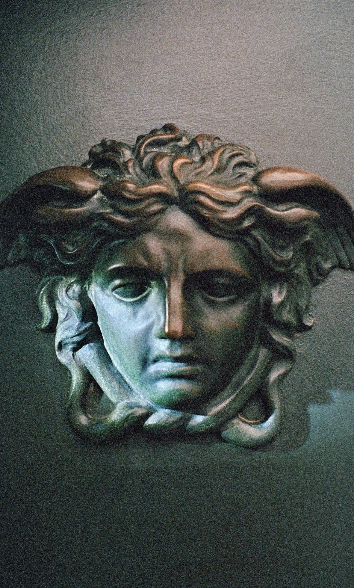
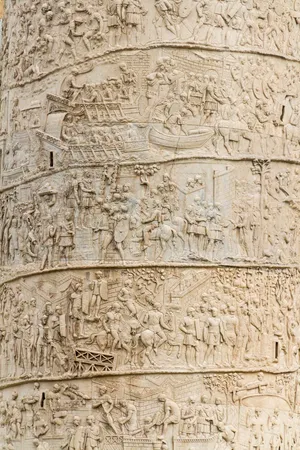
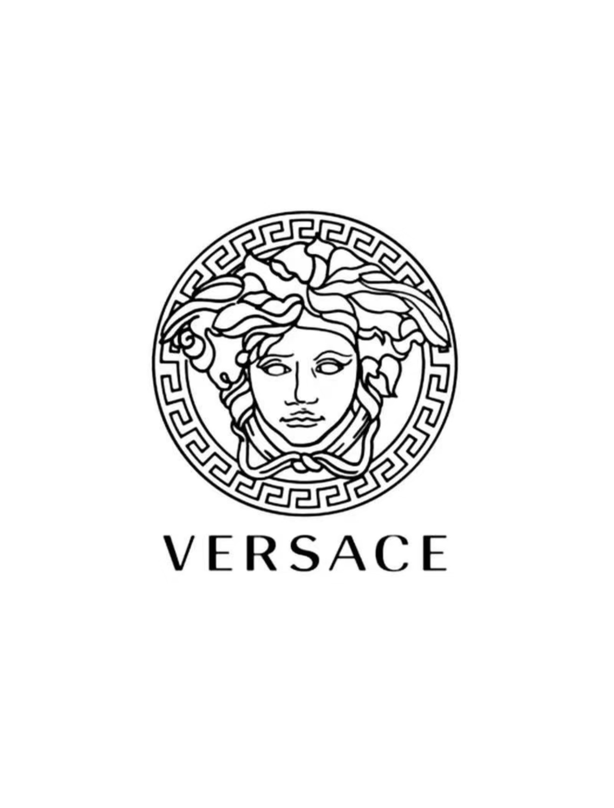
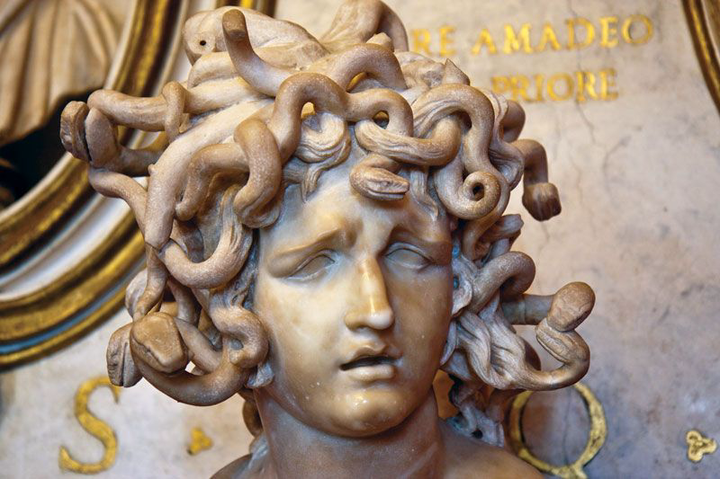
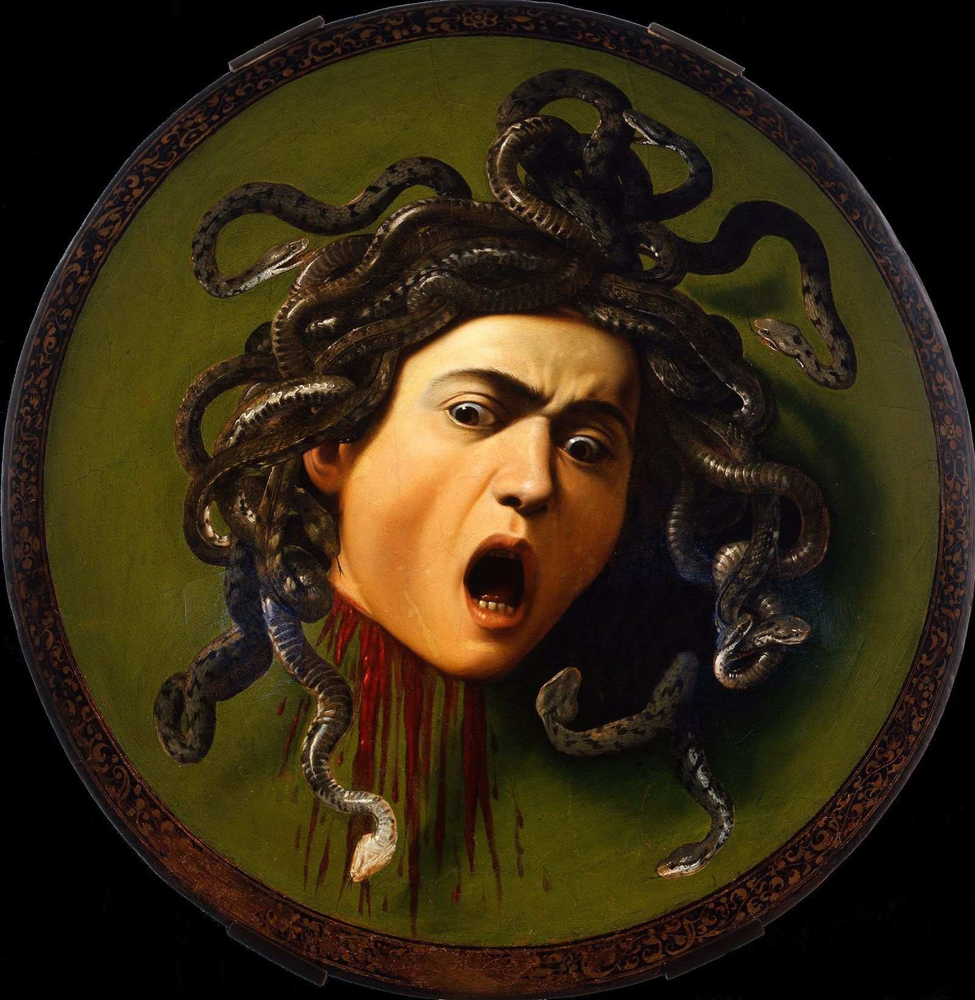
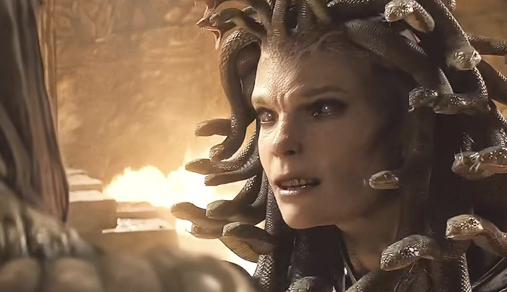
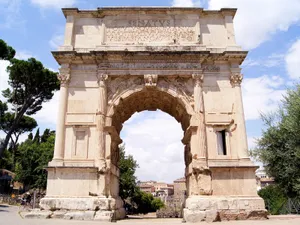
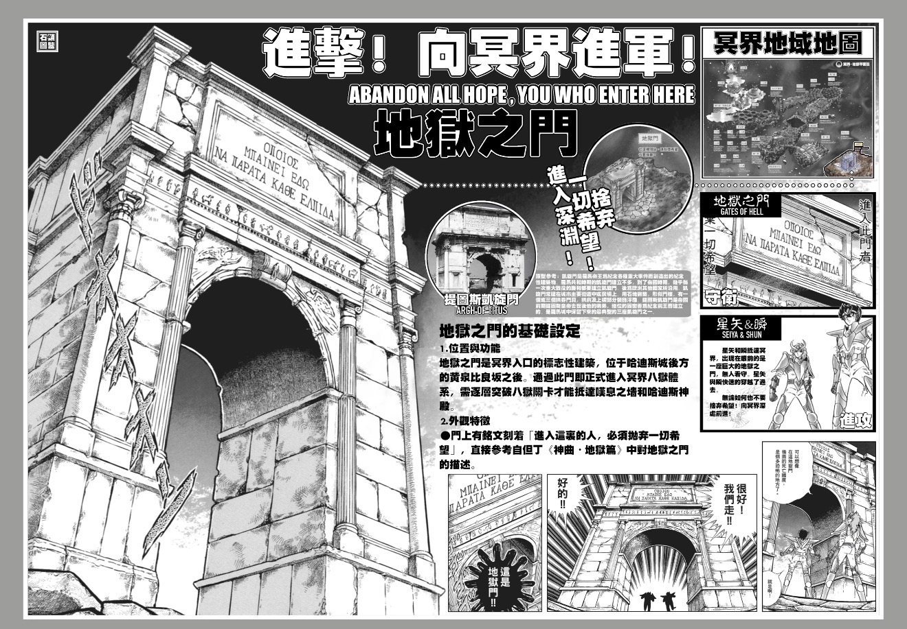
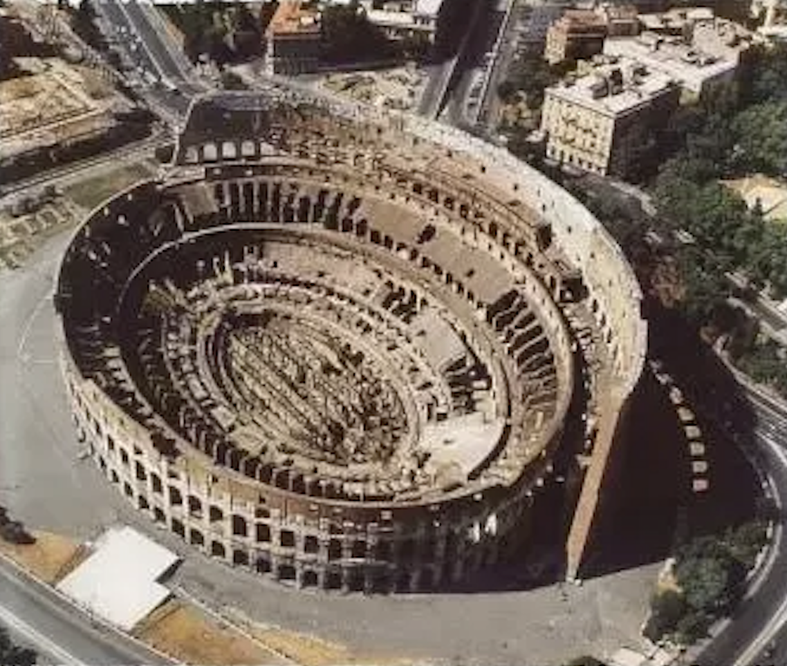
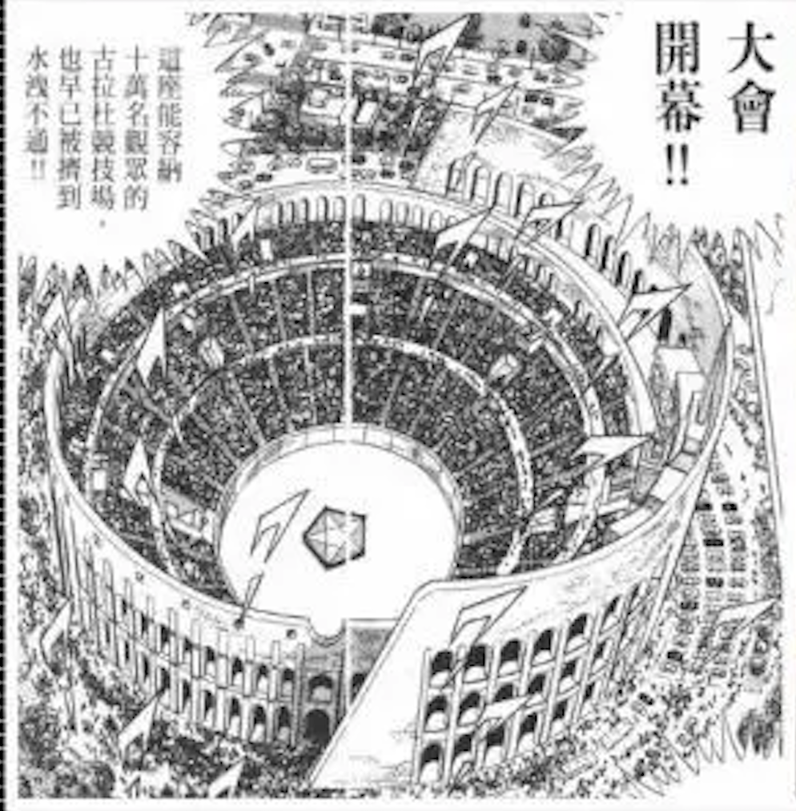

Ancient reference
Medusa Rondanini
A frontal gaze, serpent hair, mythological danger, and the power to stop the viewer.
Greek and Roman Art in Modern Visual Culture
Greek and Roman art does not survive only inside museums. Its images, bodies, buildings, and symbols keep returning in objects, streets, films, manga, and advertisements. This small online exhibition follows four places where classical visual traditions appear in contemporary life.

The course materials repeatedly show that classical art was never only decorative. Vase paintings organized myth into memorable images, Roman portraits shaped political identity, and public monuments turned power into something visible. The same strategies still appear today, although they are often transformed into entertainment, branding, architecture, or everyday design.
Project statement
This project asks how Greek and Roman visual forms continue to function in modern culture. Rather than treating classical art as a finished past, we examine how its images and monuments are reused as symbols of luxury, authority, fear, spectacle, and institutional power.
01

Ancient reference
A frontal gaze, serpent hair, mythological danger, and the power to stop the viewer.

Modern echo
The mythological head becomes a luxury symbol attached to clothing, jewelry, packaging, and consumer desire.
Versace transforms Medusa from a dangerous mythological figure into a luxury brand image. In classical tradition, Medusa's direct gaze is powerful because it threatens petrification: to look at her is to be visually captured. Versace keeps that idea of visual dominance but changes its meaning. The gaze no longer functions only as a taboo or warning. It becomes a sign of attraction, confidence, and consumer power. Placed on clothing, jewelry, bags, and advertisements, Medusa turns classical art into something wearable and commercial. This is why the logo is more than decoration. It borrows the authority of ancient myth and converts it into a modern ritual of display, where the wearer silently claims Medusa's aura of forbidden majesty.
02
Ancient reference
Columns, pilasters, pediments, arches, symmetry, and axial entrances create a visual language of order and institutional authority.

Modern campus echo
27 King's College Circle, Toronto. The university's main administrative building.
Simcoe Hall shows how classical architectural language can appear in a modern university setting. The most striking feature is the central entrance, where columns, pilasters, steps, decorative capitals, a round arch, and arched windows are densely arranged. Above them, the triangular pediment recalls the facade of an ancient Greek temple. These features guide both the viewer's gaze and the visitor's movement upward and inward, making the entrance feel formal and ceremonial. The contrast between the decorated entrance and the plainer side walls also focuses attention on the building's administrative center. Because Simcoe Hall houses the University of Toronto's core administrative offices and main assembly hall, its classical vocabulary is meaningful: it gives the building dignity, stability, and institutional authority.
03

Classical tradition
Snake hair, a frontal gaze, monstrous power, and a later tradition of tragic beauty.

Art-historical transformation
The severed head intensifies Medusa's open mouth, violent gaze, and theatrical horror.

Modern screen echo
The 2010 film uses CGI, lighting, and movement to shift Medusa between alluring victim and violent monster.
Medusa's image has never been fixed. In early Greek art, she often appears as a terrifying gorgoneion, with wide eyes, fangs, and snakelike hair. Later classical and Hellenistic traditions made her more human, beautiful, and tragic. Caravaggio's Medusa continues that transformation by turning the myth into a dramatic image of shock: the severed head meets the viewer with open mouth, tense eyes, and writhing snakes. Louis Leterrier's Clash of the Titans (2010) uses this long visual history as material for film design. In the temple scene, Medusa can look almost calm and sculptural under moonlight, but when she attacks, digital effects transform her face and body into a violent monster. The film therefore stages a visual collision between two classical traditions: Medusa as horrifying monster and Medusa as beautiful victim. CGI becomes a modern tool for making that ancient contradiction visible.
04

Ancient reference
A Roman triumphal arch was a spatial monument of conquest, imperial authority, and ceremonial passage.

Modern manga echo
The Roman triumphal form is reimagined as an entrance to Hades and psychological submission.
The "Gates of Hell" in Saint Seiya appropriate the form of the Arch of Titus, an iconic first-century CE monument in the Roman Forum. In its Roman context, the triumphal arch celebrated military conquest and imperial authority. It marked a ceremonial passage through which victory became visible in the city. In the manga, however, that language of triumph is transformed into a threshold of dread. The Corinthian order, large attic, and monumental archway remain recognizable, but the inscription is replaced by Dante's warning: "Abandon all hope, ye who enter here." By turning a monument of Roman state power into a gateway to the underworld, the visual narrative links imperial permanence with the inescapable realm of Hades. The arch no longer promises earthly victory. It stages psychological submission before the afterlife.

Ancient reference
The Flavian Amphitheater organized spectacle, social rank, state power, and institutionalized violence.

Modern manga echo
The ancient arena becomes a stage for cosmic-scale battles and heroic public display.
The "Galaxy Colosseum" in Saint Seiya reworks the Roman Colosseum, or Flavian Amphitheater, as a modern arena for mythical combat. In ancient Rome, the Colosseum was not only a place of entertainment. Its freestanding elliptical form, tiered seating, and layered facade of arches and columns helped organize social hierarchy and display imperial control over the public. The anime preserves the recognizable circular monumentality of the Roman prototype, but shifts its purpose into a fantasy world. The arena remains a theater of violence and mass attention, yet it now launches Saint Fighters into public view. This adaptation shows why the Colosseum still functions as a powerful visual shortcut for combat, spectacle, and grand assemblies.
These examples show that classical art survives not because it stays unchanged, but because it can be translated. Medusa's gaze, Simcoe Hall's classical entrance, the cinematic Medusa, and Saint Seiya's Roman monuments all reuse ancient visual forms to make modern meanings feel immediate. The classical past becomes a shared vocabulary through which contemporary culture can communicate luxury, authority, danger, spectacle, and memory. In this sense, Greek and Roman art is not only an object of historical study. It remains an active visual language that continues to shape how modern viewers imagine power, beauty, fear, and public space.